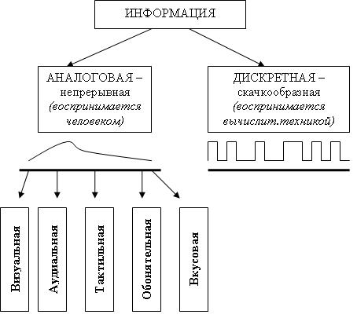

- Герц(Гц, Hz) — единица частоты периодических процессов; 1 Гц — одно исполнение(реализация) процесса за одну секунду; (например, колебания).
- Информация — это осознанные сведения об окружающем мире, которые являются объектом хранения, преобразования, передачи и использования.
Сведения — это знания, выраженные в сигналах, сообщениях, известиях, уведомлениях и т. д. Каждого человека в мире окружает море информации различных видов.
Несмотря на то, что единого строгого определения информации не существует, имеется возможность описать этот термин через характерные свойства: дуализм(двойственность), достоверность, полнота, адекватность, доступность и актуальность.
Основные виды информации по её форме представления, способам её кодирования и хранения, что имеет наибольшее значение для информатики, это:
- графическая или изобразительная — первый вид, для которого был реализован способ хранения информации об окружающем мире в виде наскальных рисунков, а позднее в виде картин, фотографий, схем, чертежей на бумаге, холсте, мраморе и др. материалах, изображающих картины реального мира;
- звуковая (акустическая) — мир вокруг нас полон звуков и задача их хранения и тиражирования была решена с изобретением звукозаписывающих устройств в 1877 г.; её разновидностью является музыкальная информация — для этого вида был изобретен способ кодирования с использованием специальных символов, что делает возможным хранение её аналогично графической информации;
- текстовая — способ кодирования речи человека специальными символами — буквами, причем разные народы имеют разные языки и используют различные наборы букв для отображения речи; особенно большое значение этот способ приобрел после изобретения бумаги и книгопечатания;
- числовая — количественная мера объектов и их свойств в окружающем мире; особенно большое значение приобрела с развитием торговли, экономики и денежного обмена; аналогично текстовой информации для её отображения используется метод кодирования специальными символами — цифрами, причем системы кодирования (счисления) могут быть разными;
- видеоинформация — способ сохранения «живых» картин окружающего мира, появившийся с изобретением кино.
Существуют также виды информации, для которых до сих пор не изобретено способов их кодирования и хранения — это тактильная информация, передаваемая ощущениями, органолептическая, передаваемая запахами и вкусами и др.
- Человек благодаря своим органам чувств привык иметь дело с аналоговой информацией, а вычислительная техника, наоборот, в основном работает с цифровой информацией.
Разница между аналоговой информацией и цифровой прежде всего в том, что аналоговая информация непрерывна, а цифровая — дискретна.
